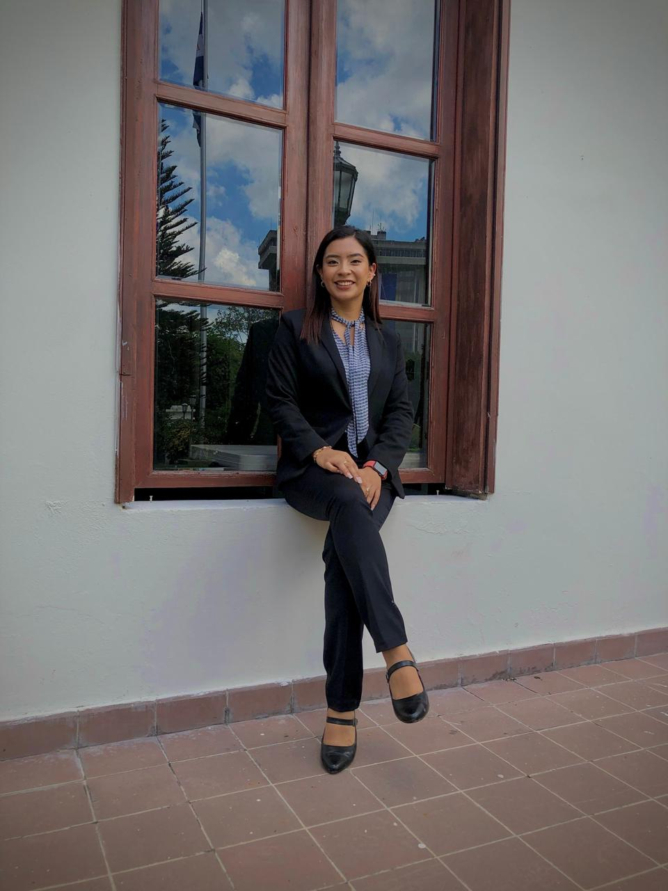

Autenticidad
Comunicar con esencia propia, naturalidad y coherencia, manteniendo la identidad y el propósito de cada mensaje.
SOBRE MÍ
Creo en el poder de las historias que inspiran, las palabras que conectan y la comunicación que, más allá de informar, genera impacto y deja huella.

MI PERFIL
Soy María Galicia, comunicadora digital multimedia con experiencia en presentación, periodismo, locución y producción de contenido audiovisual. Disfruto hablar frente a cámara, trabajar en equipo y encontrar la mejor manera de acercar un mensaje a cada audiencia.
Mi recorrido en medios, proyectos académicos y eventos me ha permitido fortalecer la redacción, la expresión oral, la adaptación a distintos formatos y la capacidad de comunicar con claridad.
Me motivan las historias que aportan, las personas que hay detrás de cada experiencia y los proyectos que convierten una idea en algo que conecta con los demás.
MI FORMA DE TRABAJAR
Comunicar con esencia propia, naturalidad y coherencia, manteniendo la identidad y el propósito de cada mensaje.
Facilidad para desenvolverme en diversos formatos, contextos y escenarios, adaptando mi comunicación a las necesidades de cada audiencia.
Desarrollo de ideas y enfoques innovadores que aportan valor y permiten comunicar la información de forma atractiva y efectiva.
Responsabilidad, dedicación y preparación constante para garantizar calidad y profesionalismo en cada proyecto.
Pasión por lo que hago,
compromiso con lo que soy.
MI PRINCIPIO AL COMUNICAR